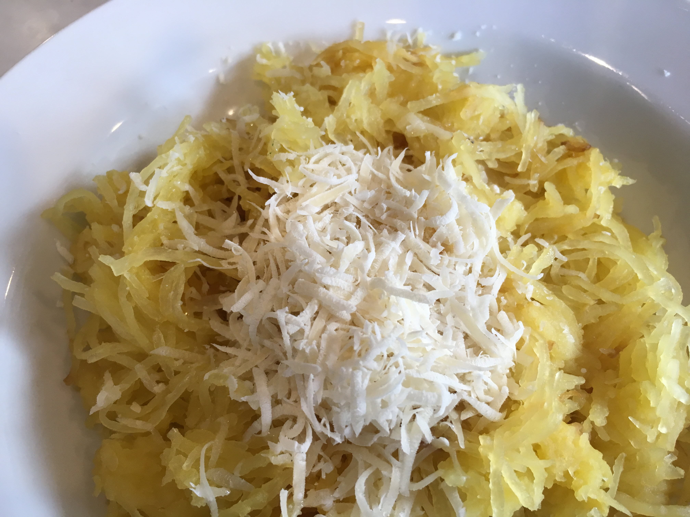

Easy Squash Spaghetti
This is a super easy recipe for spaghetti squash that I often eat for
lunch when I am looking for something healthy and quick.

Ingredients
- 1 spaghetti squash, halved and seeded
- 1 tablespoon extra-virgin olive oil
- salt and freshly ground black pepper to taste
- 1 tablespoon freshly grated Parmesan cheese, or to taste
Directions
- Preheat oven to 350 degrees F (175 degrees C). Place the squash
halves into a large baking dish with the cut-sides facing down.
- Bake in the preheated oven until easily pierced with a knife, about
40 minutes. Cool squash for 10 minutes.
- Shred the inside of the squash with a fork and transfer to a bowl.
Add olive oil, salt, and pepper to shredded squash and toss to coat.
Serve with Parmesan cheese.